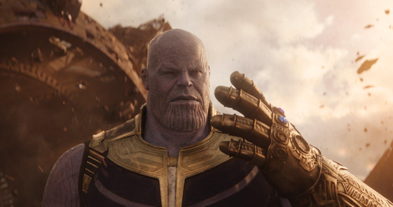
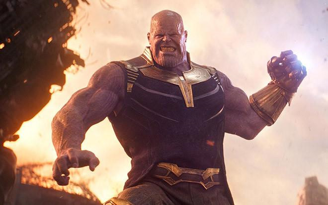
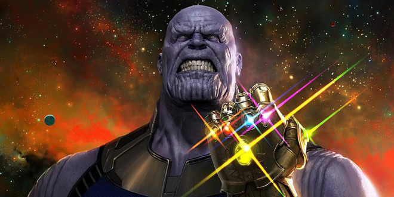

Trong 3 giai đoạn đầu tiên của Vũ trụ Điện ảnh Marvel (MCU), 6 viên Đá Vô cực quan trọng đến mức Chủ tịch Marvel Studios Kevin Feige gọi toàn bộ 22 bộ phim đầu tiên của MCU là Trường thiên Đá Vô cực (Infinity Saga). Mỗi viên đá đều có những đóng góp quan trọng vào mạch truyện của nhiều tập phim.
Thậm chí số lần khối Tesseract chứa Đá Không gian xuất hiện trong các phim MCU còn nhiều hơn cả Captain America. Chính các viên Đá Vô cực đã trực tiếp góp phần tạo nên những siêu anh hùng thuộc nhóm Avengers như Scarlet Witch, Quicksilver, Vision và Captain Marvel.
Ở Avengers: Infinity War, Thanos gắn 6 viên Đá Vô cực vào Găng tay Vô cực rồi búng tay tiêu diệt 50% sinh linh trong vũ trụ. Đến phần đầu Endgame, khi bị biệt đội Avengers bao vây, Thanos thừa nhận đã dùng chính Đá Vô cực để hủy diệt Đá Vô cực để ngăn chặn “sự cám dỗ”. Điều đó buộc các siêu anh hùng phải trở về quá khứ trong nỗ lực cứu những người đã hi sinh.
Scarlet Witch cũng từng tự tay phá hủy Đá Tâm trí gắn trên đầu Vision, bởi đặc điểm năng lượng của nữ siêu anh hùng này hoàn toàn trùng khớp với viên Đá Vô cực này. Do đó, việc Thanos đeo Găng tay Vô cực, búng tay một lần nữa để phá hủy hoàn toàn 6 viên Đá Vô cực là điều hợp lý.
Nhưng khi gặp Hulk ở New York, Thượng cổ Tôn giả (Ancient One) từng cảnh báo rằng các viên Đá Vô cực tạo ra dòng thời gian và chỉ cần hủy diệt một viên là dòng thời gian đó bị phân rã. Việc cả 6 viên Đá Vô cực bị phá hủy chắc chắn sẽ gây ảnh hưởng nghiêm trọng tới không - thời gian. Có vẻ như đây làm một điểm phi logic của Endgame.
Các viên Đá Vô cực của MCU có nhiều điểm khác biệt so với Ngọc Vô cực trong truyện tranh Marvel. Tuy nhiên loạt truyện New Avengers có ảnh hưởng rất lớn đến Infinity War và Endgame khi cũng mô tả sự kiện binh đoàn của Thanos tấn công Wakanda.
Trong truyện, 5 viên Ngọc Vô cực bị phá hủy còn viên Ngọc Thời gian biến mất trong dòng thời gian. Và đó là dấu hiệu cho thấy sự bất ổn của toàn bộ Đa vũ trụ Marvel. Cuối cùng, Đa vũ trụ tái sinh cần sự hiện diện trở lại của 6 viên Ngọc Vô cực.
Do đó, việc 6 viên Đá Vô cực bị phá hủy ở Endgame gây nhiều thắc mắc. Anh em đạo diễn Anthony và Joseph Russo giải thích Thanos không thể phá hủy hoàn toàn 6 viên Đá Vô cực. Trên thực tế, chúng vẫn tồn tại trong Vũ trụ Marvel ở trạng thái nguyên tử. Điều đó có nghĩa là chúng hoàn toàn có thể “tái sinh”, trở lại hình dáng ban đầu giống như Ngọc Vô cực trong truyện tranh.
Với việc Trường thiên Đá Vô cực kết thúc, nhiều khả năng Marvel Studios sẽ không nhắc đến Đá Vô cực trong các bộ phim kế tiếp của Giai đoạn 4 MCU và sau đó. Nhưng điều đó không có nghĩa là chắc chắn các viên Đá Vô cực sẽ không bao giờ quay trở lại.